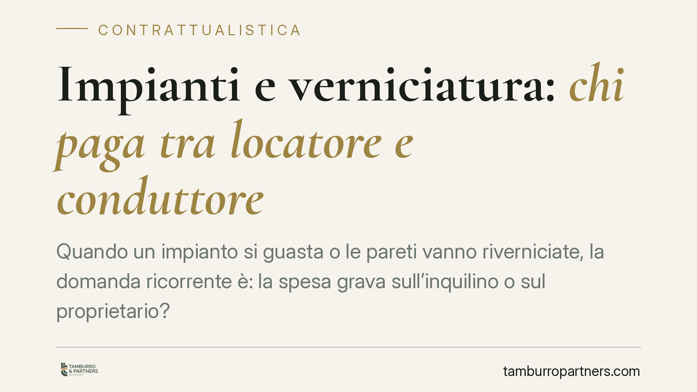

Impianti e verniciatura: chi paga tra locatore e conduttore
Quando un impianto si guasta o le pareti vanno riverniciate, la domanda ricorrente è: la spesa grava sull'inquilino o sul proprietario? La risposta non è mai automatica: dipende dal tipo di riparazione, dalla natura del contratto e dalla validità delle clausole pattuite. Vediamo i criteri di riparto e cosa verificare prima di contestare o pagare.

Il riparto delle spese nella locazione
Nella locazione il principio generale è chiaro: il locatore deve consegnare e mantenere la cosa in stato da servire all'uso convenuto ed eseguire tutte le riparazioni necessarie, salvo quelle di piccola manutenzione (art. 1575 e art. 1576 cod. civ.).
La norma decisiva per l'inquilino è però l'art. 1609 cod. civ.: le piccole riparazioni dovute a deterioramento prodotto dall'uso sono a carico del conduttore. La disposizione precisa che, in mancanza di patto, si segue l'uso locale. È qui che si colloca la maggior parte delle controversie su impianti e tinteggiatura.
Per le locazioni disciplinate dalla L. 392/1978 (ad esempio quelle a uso diverso dall'abitativo) il riparto degli oneri accessori segue criteri specifici, spesso integrati dalle tabelle degli usi o dalle intese tra le associazioni di categoria. Il primo passo è quindi sempre individuare quale disciplina si applica al singolo contratto.
Impianti: manutenzione ordinaria o straordinaria
La distinzione operativa non è tra "impianto" e "non impianto", ma tra manutenzione ordinaria e straordinaria.
La sostituzione di una guarnizione, la piccola riparazione di un rubinetto o il ripristino di componenti soggetti a normale consumo rientrano di regola tra gli oneri del conduttore. La rottura strutturale della caldaia, il rifacimento dell'impianto elettrico non a norma o un guasto derivante da vetustà restano invece a carico del locatore, tenuto a garantire l'idoneità dell'immobile all'uso.
Il criterio guida è la causa del deterioramento: usura fisiologica legata all'uso corretto o vizio strutturale preesistente o riconducibile alla vetustà del bene.
Verniciatura: usura o danno
Lo stesso schema vale per la tinteggiatura. Le pareti che presentano il normale scolorimento dovuto al tempo e all'uso ordinario non giustificano, di regola, una richiesta di rimborso al conduttore alla riconsegna: si tratta di usura fisiologica.
Diversa è l'ipotesi del danno anomalo: fori non richiusi, macchie da incuria, muffe da mancata aerazione imputabili al comportamento dell'inquilino. In questi casi il ripristino può gravare sul conduttore, ma la prova del carattere anomalo del deterioramento spetta a chi lo lamenta.
Le clausole che accollano le spese all'inquilino
Molti contratti contengono clausole che pongono a carico del conduttore anche manutenzioni che la legge attribuirebbe al locatore. Tali pattuizioni sono in linea di principio ammissibili, perché la materia è largamente derogabile.
Occorre però attenzione a due profili.
Primo: se il contratto è predisposto unilateralmente su modulo, le clausole particolarmente onerose vanno valutate alla luce dell'art. 1341 cod. civ. Va precisato, però, che la doppia sottoscrizione richiesta dal comma 2 riguarda solo le clausole vessatorie tipizzate dalla norma. L'accollo di spese di manutenzione non rientra automaticamente in quell'elenco: la sua validità, ed eventualmente la necessità di specifica approvazione, va valutata caso per caso, in base al contenuto concreto della clausola.
Secondo: anche una clausola valida non può trasformare in obbligo dell'inquilino ciò che, per natura, resta a garanzia del locatore (come l'idoneità dell'immobile all'uso convenuto). Sul punto la giurisprudenza di legittimità ha più volte ribadito la distinzione tra oneri effettivamente trasferibili e obblighi indisponibili; il riferimento a singole pronunce va sempre verificato rispetto al caso concreto.
La riconsegna dell'immobile
Gran parte delle liti nasce alla restituzione. Il conduttore deve riconsegnare l'immobile nello stato in cui l'ha ricevuto, salvo il deterioramento derivante dall'uso conforme al contratto (art. 1590 cod. civ.). Documentare lo stato iniziale e finale è quindi decisivo per distinguere l'usura, non risarcibile, dal danno.
Cosa fare in concreto
- Redigete un verbale di consegna dettagliato all'ingresso e alla riconsegna, sottoscritto da entrambe le parti.
- Scattate foto datate di impianti e pareti, sia all'inizio sia al termine della locazione.
- Distinguete usura da vizio: verificate se il deterioramento deriva dall'uso normale (a carico del proprietario) o da incuria o guasto strutturale.
- Rileggete le clausole che accollano spese all'inquilino e valutatene la validità prima di pagare o contestare.
- Conservate ricevute e fatture delle riparazioni eseguite: sono la prova di chi ha sostenuto la spesa e a quale titolo.
Un confronto tempestivo, prima che il conflitto si cristallizzi, resta la via più efficiente per entrambe le parti.
---
Contributo informativo a cura di Tamburro & Partners Avvocati - Avv. Giuseppe Tamburro. Non costituisce parere legale.
Ogni contratto ha il suo equilibrio.
Se vuoi una revisione delle clausole o una redazione su misura, scrivi allo studio. Ti rispondiamo entro un giorno lavorativo.